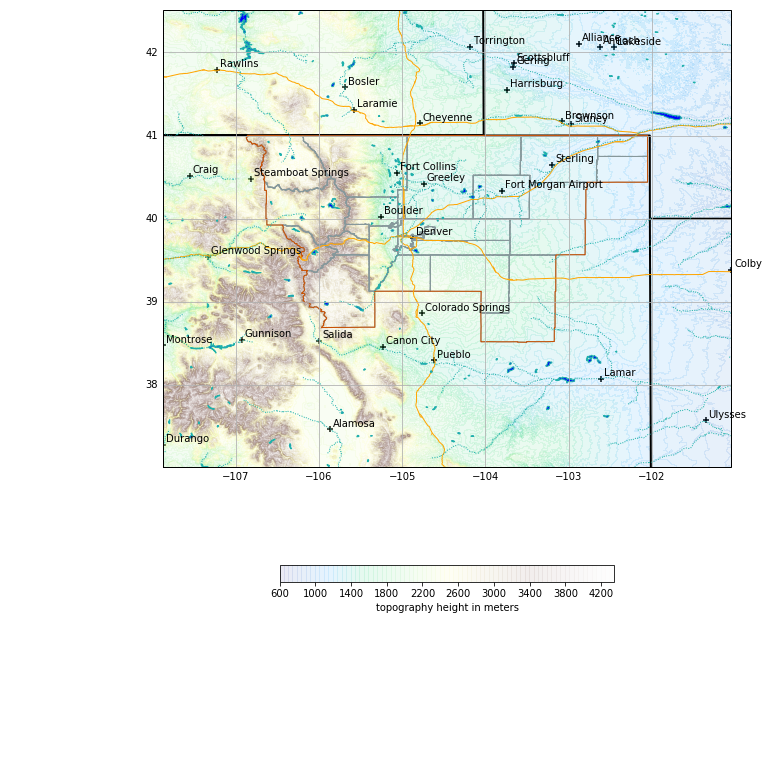

Map Resources and Topography
The python-awips package provides access to the entire AWIPS Maps Database for use in Python GIS applications. Map objects are returned as Shapely geometries (Polygon, Point, MultiLineString, etc.) and can be plotted by Matplotlib, Cartopy, MetPy, and other packages.
Each map database table has a geometry field called the_geom, which can be used to spatially select map resources for any column of type geometry.
See the Maps Database Reference Page for available database tables, column names, and types.
Notes
- This notebook requires: python-awips, numpy, matplotplib, cartopy, shapely
- Use datatype maps and addIdentifier('table', <postgres maps schema>) to define the map table: DataAccessLayer.changeEDEXHost("edex-cloud.unidata.ucar.edu") request = DataAccessLayer.newDataRequest('maps') request.addIdentifier('table', 'mapdata.county')
- Use request.setLocationNames() and request.addIdentifier() to spatially filter a map resource. In the example below, WFO ID BOU (Boulder, Colorado) is used to query counties within the BOU county watch area (CWA)
request.addIdentifier('geomField', 'the_geom') request.addIdentifier('inLocation', 'true') request.addIdentifier('locationField', 'cwa') request.setLocationNames('BOU') request.addIdentifier('cwa', 'BOU')
Note the geometry definition of
the_geomfor each data type, which can be Point, MultiPolygon, or MultiLineString.
Setup
from __future__ import print_function
from awips.dataaccess import DataAccessLayer
import matplotlib.pyplot as plt
import cartopy.crs as ccrs
import numpy as np
from cartopy.mpl.gridliner import LONGITUDE_FORMATTER, LATITUDE_FORMATTER
from cartopy.feature import ShapelyFeature,NaturalEarthFeature
from shapely.geometry import Polygon
from shapely.ops import cascaded_union
# Standard map plot
def make_map(bbox, projection=ccrs.PlateCarree()):
fig, ax = plt.subplots(figsize=(12,12),
subplot_kw=dict(projection=projection))
ax.set_extent(bbox)
ax.coastlines(resolution='50m')
gl = ax.gridlines(draw_labels=True)
gl.xlabels_top = gl.ylabels_right = False
gl.xformatter = LONGITUDE_FORMATTER
gl.yformatter = LATITUDE_FORMATTER
return fig, ax
# Server, Data Request Type, and Database Table
DataAccessLayer.changeEDEXHost("edex-cloud.unidata.ucar.edu")
request = DataAccessLayer.newDataRequest('maps')
request.addIdentifier('table', 'mapdata.county')
Request County Boundaries for a WFO
- Use request.setParameters() to define fields to be returned by the request.
# Define a WFO ID for location
# tie this ID to the mapdata.county column "cwa" for filtering
request.setLocationNames('BOU')
request.addIdentifier('cwa', 'BOU')
# enable location filtering (inLocation)
# locationField is tied to the above cwa definition (BOU)
request.addIdentifier('geomField', 'the_geom')
request.addIdentifier('inLocation', 'true')
request.addIdentifier('locationField', 'cwa')
# This is essentially the same as "'"select count(*) from mapdata.cwa where cwa='BOU';" (=1)
# Get response and create dict of county geometries
response = DataAccessLayer.getGeometryData(request, [])
counties = np.array([])
for ob in response:
counties = np.append(counties,ob.getGeometry())
print("Using " + str(len(counties)) + " county MultiPolygons")
%matplotlib inline
# All WFO counties merged to a single Polygon
merged_counties = cascaded_union(counties)
envelope = merged_counties.buffer(2)
boundaries=[merged_counties]
# Get bounds of this merged Polygon to use as buffered map extent
bounds = merged_counties.bounds
bbox=[bounds[0]-1,bounds[2]+1,bounds[1]-1.5,bounds[3]+1.5]
fig, ax = make_map(bbox=bbox)
# Plot political/state boundaries handled by Cartopy
political_boundaries = NaturalEarthFeature(category='cultural',
name='admin_0_boundary_lines_land',
scale='50m', facecolor='none')
states = NaturalEarthFeature(category='cultural',
name='admin_1_states_provinces_lines',
scale='50m', facecolor='none')
ax.add_feature(political_boundaries, linestyle='-', edgecolor='black')
ax.add_feature(states, linestyle='-', edgecolor='black',linewidth=2)
# Plot CWA counties
for i, geom in enumerate(counties):
cbounds = Polygon(geom)
intersection = cbounds.intersection
geoms = (intersection(geom)
for geom in counties
if cbounds.intersects(geom))
shape_feature = ShapelyFeature(geoms,ccrs.PlateCarree(),
facecolor='none', linestyle="-",edgecolor='#86989B')
ax.add_feature(shape_feature)
Using 25 county MultiPolygons

Create a merged CWA with cascaded_union
# Plot CWA envelope
for i, geom in enumerate(boundaries):
gbounds = Polygon(geom)
intersection = gbounds.intersection
geoms = (intersection(geom)
for geom in boundaries
if gbounds.intersects(geom))
shape_feature = ShapelyFeature(geoms,ccrs.PlateCarree(),
facecolor='none', linestyle="-",linewidth=3.,edgecolor='#cc5000')
ax.add_feature(shape_feature)
fig

WFO boundary spatial filter for interstates
Using the previously-defined envelope=merged_counties.buffer(2) in newDataRequest() to request geometries which fall inside the buffered boundary.
request = DataAccessLayer.newDataRequest('maps', envelope=envelope)
request.addIdentifier('table', 'mapdata.interstate')
request.addIdentifier('geomField', 'the_geom')
request.addIdentifier('locationField', 'hwy_type')
request.addIdentifier('hwy_type', 'I') # I (interstate), U (US highway), or S (state highway)
request.setParameters('name')
interstates = DataAccessLayer.getGeometryData(request, [])
print("Using " + str(len(interstates)) + " interstate MultiLineStrings")
# Plot interstates
for ob in interstates:
shape_feature = ShapelyFeature(ob.getGeometry(),ccrs.PlateCarree(),
facecolor='none', linestyle="-",edgecolor='orange')
ax.add_feature(shape_feature)
fig
Using 223 interstate MultiLineStrings

Road type from
select distinct(hwy_type) from mapdata.interstate;I - Interstates U - US Highways S - State Highways
Nearby cities
Request the city table and filter by population and progressive disclosure level:
Warning: the prog_disc field is not entirely understood and values appear to change significantly depending on WFO site.
request = DataAccessLayer.newDataRequest('maps', envelope=envelope)
request.addIdentifier('table', 'mapdata.city')
request.addIdentifier('geomField', 'the_geom')
request.setParameters('name','population','prog_disc')
cities = DataAccessLayer.getGeometryData(request, [])
print("Found " + str(len(cities)) + " city Points")
Found 1201 city Points
citylist = []
cityname = []
# For BOU, progressive disclosure values above 50 and pop above 5000 looks good
for ob in cities:
if ((ob.getNumber("prog_disc")>50) and int(ob.getString("population")) > 5000):
citylist.append(ob.getGeometry())
cityname.append(ob.getString("name"))
print("Using " + str(len(cityname)) + " city Points")
# Plot city markers
ax.scatter([point.x for point in citylist],
[point.y for point in citylist],
transform=ccrs.Geodetic(),marker="+",facecolor='black')
# Plot city names
for i, txt in enumerate(cityname):
ax.annotate(txt, (citylist[i].x,citylist[i].y),
xytext=(3,3), textcoords="offset points")
fig
Using 57 city Points

Lakes
request = DataAccessLayer.newDataRequest('maps', envelope=envelope)
request.addIdentifier('table', 'mapdata.lake')
request.addIdentifier('geomField', 'the_geom')
request.setParameters('name')
# Get lake geometries
response = DataAccessLayer.getGeometryData(request, [])
lakes = np.array([])
for ob in response:
lakes = np.append(lakes,ob.getGeometry())
print("Using " + str(len(lakes)) + " lake MultiPolygons")
# Plot lakes
for i, geom in enumerate(lakes):
cbounds = Polygon(geom)
intersection = cbounds.intersection
geoms = (intersection(geom)
for geom in lakes
if cbounds.intersects(geom))
shape_feature = ShapelyFeature(geoms,ccrs.PlateCarree(),
facecolor='blue', linestyle="-",edgecolor='#20B2AA')
ax.add_feature(shape_feature)
fig
Using 208 lake MultiPolygons

Major Rivers
request = DataAccessLayer.newDataRequest('maps', envelope=envelope)
request.addIdentifier('table', 'mapdata.majorrivers')
request.addIdentifier('geomField', 'the_geom')
request.setParameters('pname')
rivers = DataAccessLayer.getGeometryData(request, [])
print("Using " + str(len(rivers)) + " river MultiLineStrings")
# Plot rivers
for ob in rivers:
shape_feature = ShapelyFeature(ob.getGeometry(),ccrs.PlateCarree(),
facecolor='none', linestyle=":",edgecolor='#20B2AA')
ax.add_feature(shape_feature)
fig
Using 758 river MultiLineStrings

Topography
Spatial envelopes are required for topo requests, which can become slow to download and render for large (CONUS) maps.
import numpy.ma as ma
request = DataAccessLayer.newDataRequest()
request.setDatatype("topo")
request.addIdentifier("group", "/")
request.addIdentifier("dataset", "full")
request.setEnvelope(envelope)
gridData = DataAccessLayer.getGridData(request)
print(gridData)
print("Number of grid records: " + str(len(gridData)))
print("Sample grid data shape:\n" + str(gridData[0].getRawData().shape) + "\n")
print("Sample grid data:\n" + str(gridData[0].getRawData()) + "\n")
[<awips.dataaccess.PyGridData.PyGridData object at 0x1174adf50>]
Number of grid records: 1
Sample grid data shape:
(778, 1058)
Sample grid data:
[[ 1694. 1693. 1688. ..., 757. 761. 762.]
[ 1701. 1701. 1701. ..., 758. 760. 762.]
[ 1703. 1703. 1703. ..., 760. 761. 762.]
...,
[ 1767. 1741. 1706. ..., 769. 762. 768.]
[ 1767. 1746. 1716. ..., 775. 765. 761.]
[ 1781. 1753. 1730. ..., 766. 762. 759.]]
grid=gridData[0]
topo=ma.masked_invalid(grid.getRawData())
lons, lats = grid.getLatLonCoords()
print(topo.min())
print(topo.max())
# Plot topography
cs = ax.contourf(lons, lats, topo, 80, cmap=plt.get_cmap('terrain'),alpha=0.1)
cbar = fig.colorbar(cs, extend='both', shrink=0.5, orientation='horizontal')
cbar.set_label("topography height in meters")
fig
623.0
4328.0
